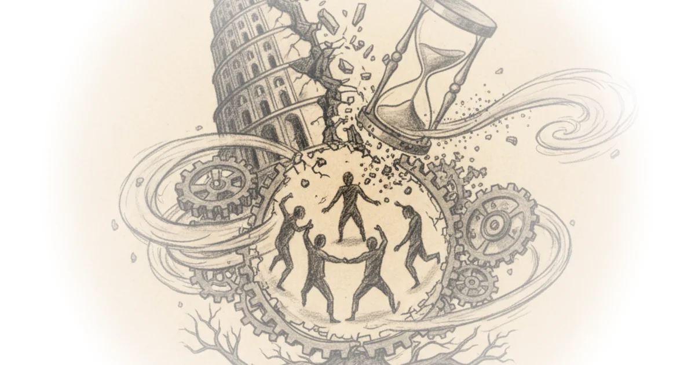

Economics Explained cuts through the noise of French political theater to reveal a brutal arithmetic problem: a nation that has successfully extended life expectancy is now being strangled by the very system designed to honor it. The author's most striking claim isn't that France is failing, but that its greatest social achievement—its comprehensive safety net—has become a structural drag that no amount of political maneuvering can easily fix. This matters now because the recent collapse of the French government isn't just a local scandal; it is the first major domino in a chain reaction that could redefine the limits of the European welfare state.
The Arithmetic of an Aging Society
The piece anchors its argument in a demographic reality that is often glossed over in favor of political drama. "More than one in five French citizens are now over the age of 65, roughly 15 million people," Economics Explained writes, noting that this figure is more than double the global average. The author effectively illustrates the compounding nature of this crisis by pointing out that by 2070, nearly 30% of the population will be over 65. This isn't a temporary blip; it is a fundamental shift in the nation's composition.

The commentary highlights a paradox that many miss: the success of the system is its undoing. "The very success of France's social safety in preserving the health of its citizens has now become a structural drag on the nation's economy." This is a powerful reframing. It suggests that the problem isn't a failure of policy intent, but a triumph of policy outcome that the economy can no longer sustain. Critics might note that other nations with similar demographics, like Japan or Germany, are managing without total systemic collapse, suggesting that France's specific cultural rigidity is as much a culprit as the raw numbers.
The seeds of this demographic shift were planted decades ago and as we all know you simply can't turn back the clock.
The Pay-As-You-Go Trap
Economics Explained then dissects the financial mechanism that makes this demographic shift so dangerous. The core of the argument rests on the "pay-as-you-go" nature of the French pension system, where today's workers fund today's retirees. The author notes that this worked beautifully in the 1960s when there were nearly four workers for every retiree, but today, "there are approximately 1.9 workers supporting every pensioner in France." This collapse in the dependency ratio is the engine driving the crisis.
The piece argues that the solution space has narrowed to two unpalatable options: raise taxes or cut benefits. However, the author demonstrates why the first option is mathematically impossible. "France has consistently maintained the near highest tax to GDP ratio out of the 38 countries in the OECD at a whopping 44%." With the total tax burden on employees hitting 47% when including employer contributions, there is simply no room to extract more revenue without stifling the economy further. This evidence holds up well against international comparisons, particularly when contrasted with the United States, where government spending accounts for only 38% of GDP.
The Political Impossible
The most compelling section of the coverage is its analysis of why the logical solution—cutting benefits—remains politically toxic. Economics Explained describes the French social contract not as a policy preference but as a "fundamental contract between the citizen and the state." When President Macron attempted to raise the retirement age to 64, the reaction was not a debate but a "declaration of war that plays out in the streets."
The author details how Macron was forced to invoke Article 49.3, a constitutional provision allowing the government to pass laws without a parliamentary vote, to bypass opposition. "It allows the prime minister to engage the responsibility of the government to pass and adopt bills without parliamentary reviewing their bill would fail with a vote." This move, while legally sound, came at a massive political cost, with polls showing 80% of the population viewed the action as unjustified. The coverage effectively argues that France is trapped in a cycle where the only way to solve the economic problem is to break the political trust required to govern.
When politicians present plan B, it isn't a parliamentary debate. It is more akin to a declaration of war that plays out in the streets.
The narrative takes a sharp turn in 2024, illustrating the fragility of the situation. When Prime Minister Michel Barnier attempted to use the same tool to pass a budget, it backfired spectacularly. "Prime Minister Michael Barier's government had officially collapsed," marking the first time a vote of no confidence succeeded since 1962. This outcome underscores the author's thesis: the political system is now too fractured to implement the necessary economic corrections.
Bottom Line
The strongest part of this argument is its refusal to treat the French crisis as a simple failure of leadership, instead framing it as a collision between immutable demographics and a rigid social contract. Its biggest vulnerability is the assumption that the current stagnation is unique to France, when in reality, the entire developed world faces similar headwinds, albeit with varying degrees of political volatility. Readers should watch for whether France can find a third way between tax hikes and benefit cuts, or if the cycle of government collapse will continue to deepen the economic stagnation.